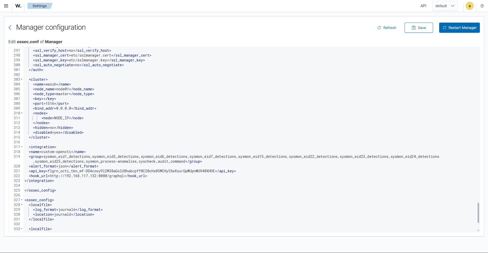

Manager Configuration¶
The integration is activated by an <integration> block in the Manager's
ossec.conf. This tells Wazuh which events to forward to the script and
how to reach OpenCTI.
Where to edit¶
Or, from the Wazuh dashboard: Server management → Settings → Edit
configuration. Add the block below an existing section such as <cluster>,
inside an <ossec_config> block.

The integration block¶
<integration>
<name>custom-opencti</name>
<group>sysmon_eid1_detections,sysmon_eid3_detections,sysmon_eid6_detections,sysmon_eid7_detections,sysmon_eid15_detections,sysmon_eid22_detections,sysmon_eid23_detections,sysmon_eid24_detections,sysmon_eid25_detections,sysmon_process-anomalies,syscheck,audit_command</group>
<alert_format>json</alert_format>
<api_key>REPLACE-ME-WITH-A-VALID-TOKEN</api_key>
<hook_url>http://YOUR_OPENCTI_IP:8080/graphql</hook_url>
</integration>
Parameters¶
| Parameter | Description |
|---|---|
name |
Integration name — must match the file name (custom-opencti). |
group |
Comma‑separated rule groups that trigger a lookup. Tailor this to the sources you actually collect. |
alert_format |
Must be json — the script parses the alert as JSON. |
api_key |
Your OpenCTI API token (read permissions). |
hook_url |
The OpenCTI GraphQL endpoint, ending in /graphql. |
Keep the token out of version control
api_key is a real secret. Use a placeholder in any copy you publish, and
restrict read access to ossec.conf (it is root:wazuh, mode 640, by
default).
Choosing the group list¶
The group value decides which events are inspected. Match it to your telemetry:
The native, zero‑extra‑tooling baseline — file hashes from monitored directories:
Full Windows coverage once Sysmon and the base rules are in place:
group vs rule_id
You may use <rule_id> instead of <group> to trigger on specific rules,
but you cannot mix both — if <rule_id> is present, <group> is ignored.
Apply the change¶
➡️ Continue to Detection rules so Wazuh raises alerts when the script reports a hit.